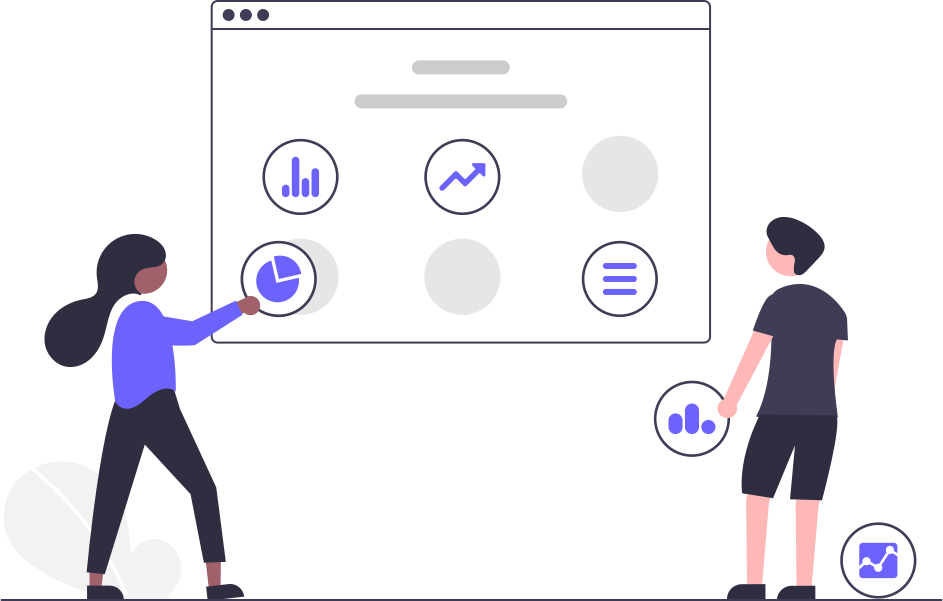

© Imagin'Soft 2021

Hello World !!!
I'm Randy BUHENDWA...
I'm a Front-End Web Developer
Welcome to my PORTFOLIO, and let's take
a look...
Projects
An IT project that can be the creation of new software, the creation of a new digital space, the creation of a new IT infrastructure, the creation of a support service, or even a major development software, the integration of existing software, the major evolution of an infrastructure ... thanks to my time at Kinshasa Digital Academy, I had the opportunity to work on all kinds of projects
the most used methodology in the projects in which I had to participate, was the agile methodology. it offers as an advantage, flexibility, collaboration and communication internally, and with the customer
the quality, the taste of a job well done, being a priority for me, here are the few projects on which I had to work ...

HISTOIRE D'INTERNET
Context of the project
project on the stylization of a static page on the history of the webWe had to style the two HTML pages that we had created in the project "Structurer un contenu HTML" using CSS version 3; according to the model provided by the graphic designer.
Project duration
the project on the stylization of a static page was completed in 4 hours

FORMULAIRE D'ENREGISTREMENT
Context of the project
We had to create a registration form in a site to offer a registration service for all Freelance developers.For that, we had to create user account forms through an account creation form.
Project duration
the project on the stylization of a static page was completed in 6 hours
PAGE D'ACCUEIL KINSHASA DIGITAL
Context of the project
We had to reproduce the "HOME" and "EMPLOYMENT" pages of the site https://kinshasadigital.com/, while using all the resources provided with the model by the Designer.
Project duration
the faithful reproduction of the model of the KD site was carried out in 7 days

PORTFOLIO
Context of the project
In order to be able to sell oneself effectively, digital tools have become an essential means of presenting one's skills and opening up to opportunities. The goal of the project is to develop a responsive Portfolio website, from the creation of the models to the development of the website.
Project duration
the realization of this project took us 10 daysAbout Me
My name is Randy BUHENDWA, I am a young enthusiast and passionate about software development for over a decade.

I had my first experiences as a self-taught person before going to the Ecole Informatique des Finances, E.I.Fi in acronym, where I obtained a degree in computer analysis and programming; then at the Higher Institute of Programming and Analysis to a License in Software Engineering. Then I embarked on a Simplon training provided by the Kinshasa Digital Academy, in order to become a FullStack Web developer. It allowed me to make a certain network of people competent, from whom I learned the best and developed a number of skills that had been lacking in me until then.

Being passionate about advanced tech, I make a point of always staying informed and working on innovative projects, in order to perfect my knowledge in this area. This is how as part of my training I worked on the analysis and the design of the desktop software for managing agents of the Ministry of Finance, the application of the CASIF-RENOVE mutual, the reproduction of the home page of the kinshasa digital site, to name just a few ...

I have for hobbies, reading, video games, cinema. I find that every man must take a bite out of life and that he must fight for noble causes and important enough to devote his life to them, because life is short. by remaining integrated and cheerful, we increase our success rates across our businesses. In addition, I am involved in raising awareness of good practices related to digital (especially the web)
Skills
la qualite, le gout du travail bien fait, etant prioritaire pour moi, voici les quelques projets sur lesquels j’ai eu a travailler...
ADAPTABILITY

I am flexible, open to new challenges, and know how to be optimistic and resilient in the face of change thanks to my mastery of agile methodology such as SCRUM, KANBAN.
INTERPERSONAL SKILLS

I have good contact with others, I know how to be able to communicate easily and naturally, and inspire confidence.
COMMUNICATION & COOPERATION

I have a strong sense of interpersonal skills, which allows me to know when to intervene in the best possible way and when to take the lead or when to just listen; this in order to achieve a common goal ...

I know how to listen and transmit information or convey a message in a clear and powerful way, adapted to my audience, by adopting an adapted verbal communication ...
I know how to be able to find and take my place in a group, while knowing how to ask and share the necessary information ...

This means that I can work effectively with all types of profiles by adapting easily to different personalities, codes and modes of operation, showing myself as someone reliable and trustworthy, contributing to collective intelligence.
EASE OF LEARNING

I have the ability to proactively manage my own learning; having understood the mechanisms of learning and motivation, and having understood my own mode of operation, I know how to question this that I think I know. I know how to be sufficiently organized and confident in my own abilities to train myself effectively and maintain my employability. I know how to put my ego aside so to admit my mistakes, to recognize my weaknesses, to admit them when I don't know; and be fairly open and attentive to what others have to teach me, whatever their position, put them forward when It is well deserved, knowing how to ask for help, showing myself accessible.
CURIOSITY & CREATIVITY

I have an open mind, eager for learning and discoveries, which makes me able to go and find the answers to my questions myself, to explore a subject that arouses interest, to seek to know others, Generate new ideas from this curiosity, this open-mindedness, this daring and by listening to my intuition.
HARDSKILLS

j’ai l'esprit ouvert, avide d'apprentissage et de découvertes, ce qui me rend capable d'aller chercher moi-même les réponses à mes questions, de creuser un sujet qui éveille l'intérêt, chercher à connaître les autres, Générer des idées nouvelles issue de cette curiosité, cet ouverture d'esprit, cet audace et en étant à l’écoute de mon intuition.